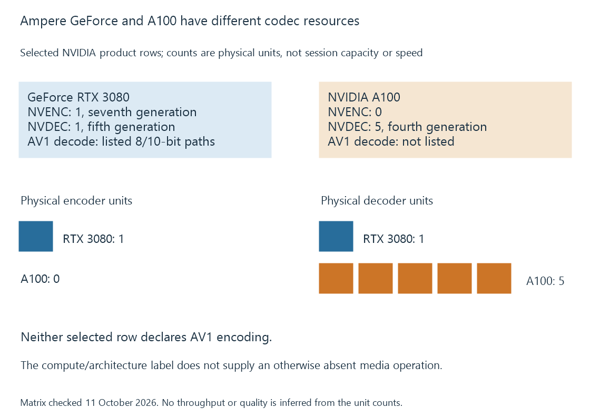

NVIDIA Ampere media capabilities
Ampere-family media capabilities differ between graphics and compute-oriented chips, with AV1 decoding and encoder presence requiring the exact product’s published row.
Ampere graphics products make AV1 decoding relevant to many NVIDIA media routes. Compute-oriented Ampere products can have a different decoder architecture and no encoder.
The exact chip/product must accompany the family name.
The RTX 3080 and A100 rows answer different questions
Selected current matrix facts are:
| Property | GeForce RTX 3080 | NVIDIA A100 |
|---|---|---|
| NVENC resources | One, seventh-generation entry | Zero |
| NVDEC resources | One, fifth-generation entry | Five, fourth-generation entry |
| AV1 decoding | Yes, 8/10-bit entries | No in the listed entries |
| AV1 encoding | No | No |
| HEVC ten-bit encoding | Yes | No NVENC path in this row |
NVIDIA SDK 13.1 also states that GA100's NVDEC architecture corresponds to the Turing decoder architecture. That supports the exact-chip distinction shown in the matrix.

More general-purpose compute resources do not change which codec hardware is present.
Input and output can use different formats
On a supported RTX 3080 route, an AV1 source can be reconstructed into pictures and prepared for H.264 or HEVC output.
This uses an AV1 decoder and a different target encoder. It does not require AV1 encoding, which the selected encoder row does not supply.
For A100, pointing at the RTX 3080's AV1 or NVENC entry would identify another product's capability. A conversion needing that operation must establish a different usable route.
Engine count is not a complete-session estimate
Five decoder resources on A100 describe its published media hardware. They do not create a video encoder, nor do they calculate the CPU/filter/output requirements of a complete session.
A graphics product's single encoder can likewise support permitted work through its actual capacity and session policy rather than one fixed client per physical engine.
See Also
- NVIDIA Turing media capabilities
- NVIDIA Ada Lovelace media capabilities
- NVIDIA NVDEC
- NVIDIA NVENC
- How to read a hardware codec support matrix